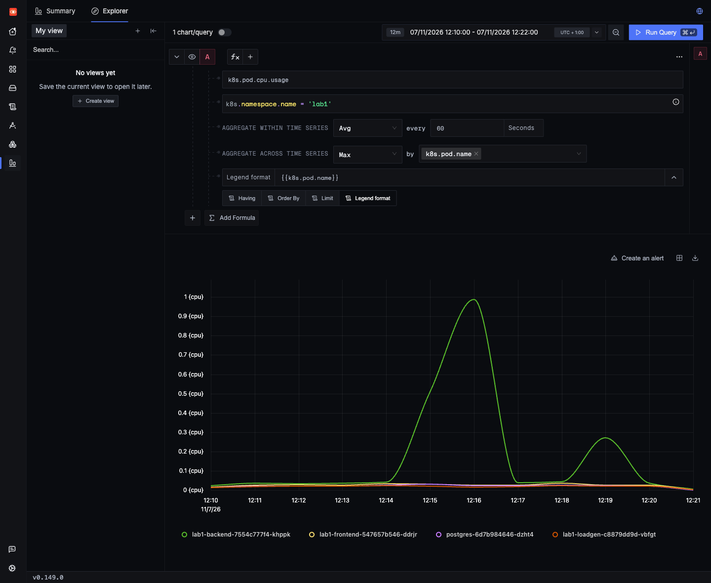
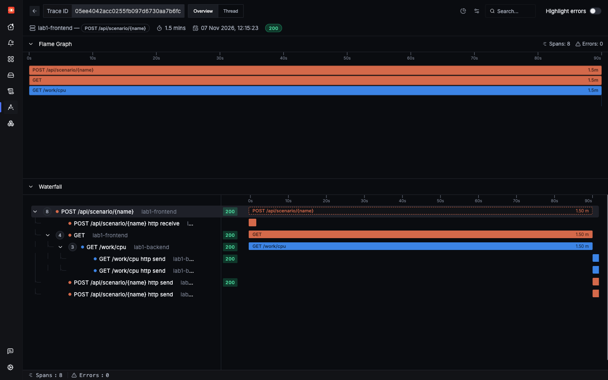
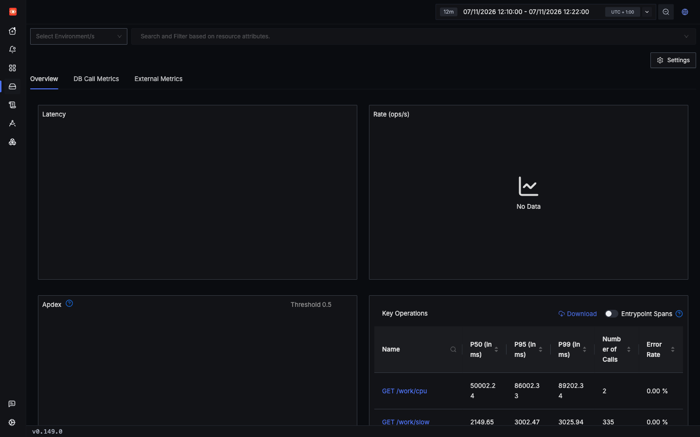
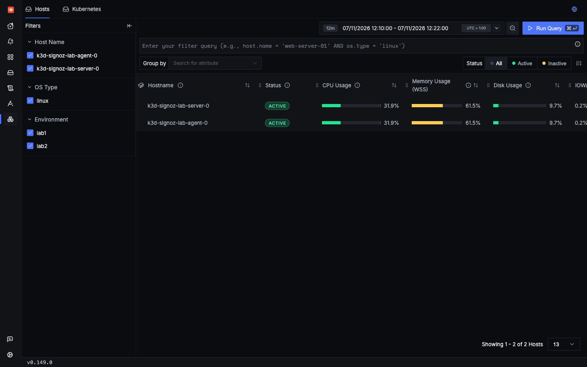
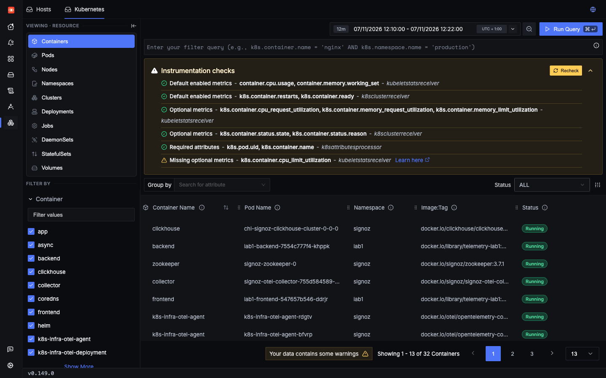

Lab 1: incident 6 of 6
CPU saturation
One expensive request slows down unrelated requests. Traces alone will not explain this. You need the pod's CPU, which comes from the SigNoz agents on each node, not from the app.
1Trigger it
The cpu_burn scenario spins the CPU in the backend. To see it on charts, burn for at least 60 seconds, and keep the load generator running so you can watch other requests suffer.
2Symptom
Requests that have nothing to do with the burn get slower. During a real 90-second burn, a list request was sent every second from outside the cluster, and the load generator kept running at 5 requests/s:
list, as measured by the client | Samples | P50 | P95 | Max |
|---|---|---|---|---|
| Before the burn | 30 | 20.1 ms | 49.9 ms | 115.9 ms |
| During the burn | 80 | 113.5 ms | 170.3 ms | 188.9 ms |
| After the burn | 20 | 15.4 ms | 36.7 ms | 36.7 ms |
The spans show the same effect from inside the backend:
| Backend route | P50 before | P50 during | P50 after |
|---|---|---|---|
GET /orders | 9.8 ms | 88.6 ms | 9.4 ms |
POST /orders | 30.7 ms | 113.8 ms | 30.7 ms |
You can feel this yourself. Start a burn above, then fire list here a few times while it runs, and again after it ends. Compare the times.
That is about a 9-fold slowdown on GET /orders, a route that did nothing wrong. A trace of one of these requests looks normal, only slower. It has no hint of the real cause.
3Where to look
- A metric first:
k8s.pod.cpu.usagefor the pods in namespacelab1. It lags by about a minute. - Then find what was running at that moment, with a search for long spans in that service.
- Infra Monitoring in SigNoz has Hosts and Kubernetes tabs. See below for what was confirmed.
Where this metric comes from. k8s.pod.cpu.usage doesn't come from the app. It comes from the SigNoz agent that make up runs on each node, as part of the k8s-infra chart. Its kubeletstats receiver asks the kubelet for every pod's usage every 30 seconds. That's why it lags, and why short spikes hide, as the evidence below shows. It works for any pod, with no change to the app, including Postgres, which has no agent.
The app's own Python agent reports CPU too, but differently. In a 45-second burn on 2026-11-09 Query API only:
| Metric | Sent by | What it measures | During the burn |
|---|---|---|---|
k8s.pod.cpu.usage | The node agent | The whole pod, in cores | 0.84 |
process.cpu.utilization | The app's Python agent | The app's process, as a share of all the machine's CPUs | 0.24, which on this 4-CPU machine is about one core |
system.cpu.utilization | The app's Python agent | The whole machine, not the pod | Moved with everything else running |
Use the first: it's in cores, it covers every container in the pod, and it doesn't need an agent. Lab 3 explains the node agents and what they collect, and shows what pod CPU alone can't tell you: a pod held back by its CPU limit can look almost idle on this same chart.
From a trace to its pod: every span in this lab carries k8s.pod.name, added by the SigNoz agent on the node. So you can go straight from a slow trace to the pod that served it, and then to that pod's CPU. In the saved run it is lab1-backend-7554c777f4-khppk.
4Search
Metrics use a builder rather than a search expression. These are the settings:

Then find the culprit. Lab 1 has no span of its own for this work, but the route's Server span covers it, so a search for that route ties the spike to a request:
5Evidence
The pod goes from about 0.04 cores to almost a full core, and returns afterwards. Nothing else in the lab moved: the frontend, Postgres and the load generator all stayed under 0.04 cores.
The trace of the burn itself is simple. Its long GET /work/cpu span ties the spike to a specific request:


lab1-backend, reached by direct URL. Seen in SigNoz UI Key Operations has real data, with GET /work/cpu at the top, but the charts are empty. Gap 2 explains why.Short spikes hide
The 10-second burn reached 0.509 cores in its one raw sample, but only about 0.27 on the 60-second chart above, because averaging mixes the spike with idle time. Pod CPU is also sampled every 30 seconds, so a very short burst can disappear entirely.
Infra Monitoring
Both tabs loaded with real data, but they show the state now, not a history of this incident. The Hosts tab is per node rather than per pod.


6Root cause
labs/lab1-hands-off/app/backend.py lines 143–150143@app.get("/work/cpu")
144def cpu(seconds: float = 10.0) -> dict:
145 end = time.monotonic() + seconds
146 n = 0
147 while time.monotonic() < end:
148 n += sum(i * i for i in range(1000))
149 log.warning("burned CPU for %.1fs", seconds)
150 return {"burned_s": seconds}A CPU-bound Python loop runs inside a request handler, in a service with one process. The pod peaked at 0.991 cores in the raw samples, which is what a single busy Python process can use. labs/lab1-hands-off/k8s/app.yaml sets a CPU request of 50m but no limit, so this was not throttling:
labs/lab1-hands-off/k8s/app.yaml line 5555 resources: { requests: { cpu: 50m, memory: 128Mi } }Why are other requests slowed? The most likely reason is that Python's global interpreter lock lets only one thread run Python code at a time, so handlers wait for their turn. That fits the numbers, but it was not measured directly.
7Resolution
Keep heavy work away from the process that serves requests. Move it to a background job or a worker pool. For a quick improvement, run more than one process, so that one burn cannot hold up every request:
image: telemetry-lab1:dev
imagePullPolicy: IfNotPresent
- command: ["uvicorn", "backend:app", "--host", "0.0.0.0", "--port", "8000"]+ command: ["uvicorn", "backend:app", "--host", "0.0.0.0", "--port", "8000", "--workers", "2"]This one needs care: each worker is its own process with its own copy of the agent. And it only helps while a free worker exists.
Try the change
- Change it. Make that edit in
labs/lab1-hands-off/k8s/app.yaml, and save it. It's YAML, not code, but you deploy it the same way, becausemake lab1also applies the lab's manifests. - Deploy it, from the repo's root. Saving the file isn't enough, because the pods run the image from the last build. What this command does.
make lab1 - Fire the same request, and place orders while it runs. Compare how long the orders take.
- Undo the change when you're done, so the later pages match what they describe.
git restore labs/lab1-hands-off/k8s/app.yaml make lab1
We did this once, on a busy shared VM. It deployed and telemetry kept arriving, but four orders during a burn took 78 to 672 ms with two workers, and 134 to 440 ms with one. That's too noisy to show a benefit, so measure it on your own hardware before relying on it. Moving the work out of the process is still the real fix.
Once it is fixed, you want to hear about it before users do. A CPU alert on k8s.pod.cpu.usage would catch this. A fresh install has no alerts, so you need to write that rule yourself (gap 5). Lab 4 shows how.
Check yourself: A 10-second burn shows only about 0.27 cores on a 60-second step. Why?
Check yourself: How do you get from a slow trace to the pod that served it in this lab?